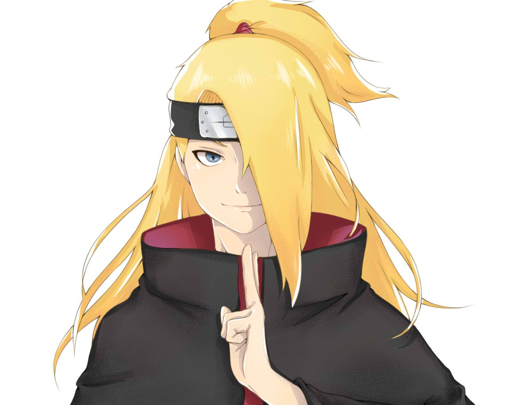

Дейдара
Дейдара был ниндзя-отступником ранга-S из Скрытого Камня. Во время своего пребывания в деревне он был членом Корпуса Подрывников. После ухода из неё Дейдара был вынужден вступить в Акацуки, и стал ее самым молодым членом. В организации он был партнером Сасори до тех пор, пока последний не погиб, а позже — напарником Тоби до самой своей смерти.
